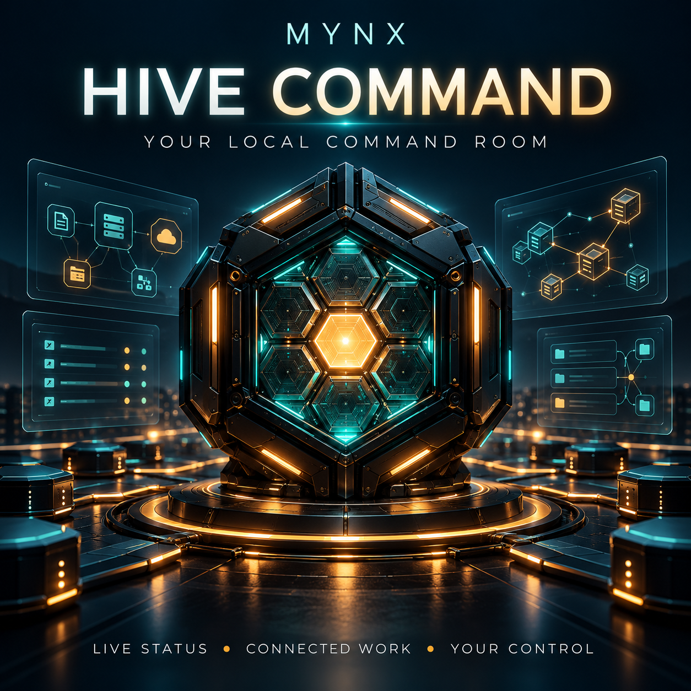

MYNX HIVE COMMAND
See the signal.
Follow the work.
Your local command room for machine reports, folder observations and approved device tasks.
Try the live browser monitor ↓Windows previewThis current edition uses configured device connections. Automatic Wi-Fi linking belongs to a later restoration of the original Hive workflow.
FREE BROWSER TOOL / REAL PAGE SIGNALS
A small command room you can use now.
This tool measures this page’s connection to its own hosted signal file and records a heartbeat while the page is running. It does not scan your Wi-Fi, read system RAM/CPU or connect your cameras.
Press Start. Each connection check is real; nothing is prefilled.
| Time | Event | Result |
|---|
PRIVATE REPORT VIEWER
Bring a Hive report into view.
Open a Hive path-index or activity JSON export. The viewer runs locally in your browser; the file is not uploaded. It displays only selected report fields and never executes report content or follows addresses.
No report loaded.
Imported entries are dated snapshots, never presented as live device connections. Up to 10,000 rows are accepted. Reloading the page clears this viewer.WINDOWS EVALUATION PREVIEW
The command room on your own computer.
The Windows edition adds real machine health, selected-folder watching, persistent records and a matched device worker. Other computers require their own configured credentials. Android storage needs existing ADB and phone approval; camera playback needs your real stream address, installed VLC and local approval.
Download Windows preview ↓Ask about Hive ↗Free evaluation preview. No payment required. Extract everything, then open START HIVE COMMAND. Your own keys and database are created on first run. No builder data is included.
Windows x64; Windows ARM requires x64 emulation. Fresh extraction/startup tested on the builder’s Windows host. Your hardware, physical multi-PC networks and extended operation still need acceptance. Temporary cleanup is preview-only. No automatic router, Ring, Cobra or general camera integration is claimed in this edition.Privacy, permissions & ownership
Default access stays on your computer. Optional LAN mode uses authenticated HTTP on a trusted private network; it is not an internet-facing service. Device keys are scoped. Reboot needs typed confirmation plus approval on the target computer. Watched files stay where they are. Keep your private data folder and keys out of shared packages.
© 2026 Joshua Hale / MYNX Intelligence. You may run this preview for personal evaluation. Original application code and branding remain the creator’s property; redistribution rights are not granted. Python retains its bundled license. Branding is not patent or trademark registration.
One part of a much bigger workshop.
Hive belongs to Joshua’s wider ecosystem of local operators, production tools, apps and self-operated infrastructure. The public demo never connects to Joshua’s private machines or operator controls.
Meet Nova ↗ · Explore the ecosystem ↗ · Try more builds ↗